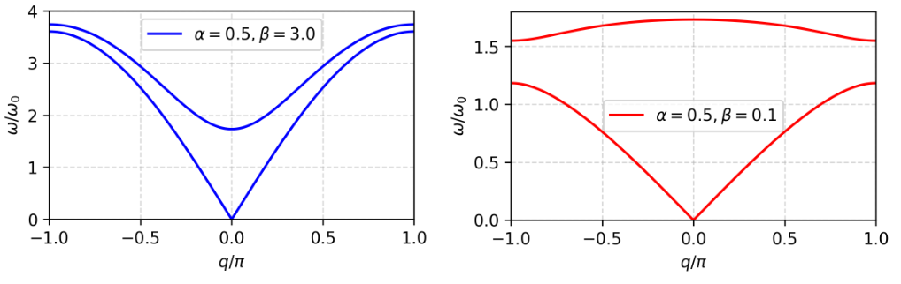
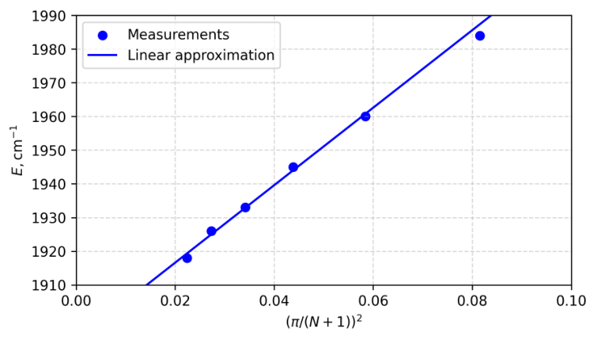

A1. 전체 에너지는 변형된 용수철의 퍼텐셜 에너지와 원자 운동의 운동 에너지로 이루어지므로
A2. 에너지 식을 미분하면
$$\begin{aligned}\dot E = \sum_n\Bigl(&k(u_n - v_n)(\dot u_n - \dot v_n) + \alpha k(u_{n+1} - v_n)(\dot u_{n+1} - \dot v_n) + \beta k(u_{n+1} - u_n)(\dot u_{n+1} - \dot u_n)\\ &+ \beta k(v_{n+1} - v_n)(\dot v_{n+1} - \dot v_n) + m\dot u_n\ddot u_n + m\dot v_n\ddot v_n\Bigr).\end{aligned}$$$\dot v_n$과 $\dot u_n$을 포함한 항끼리 묶으면
$$\begin{aligned}\dot E = \sum_n\Bigl(&\dot v_n\bigl(m\ddot v_n + kv_n(\alpha + 1 + 2\beta) - ku_n - \alpha ku_{n+1} - \beta k(v_{n-1} + v_{n+1})\bigr)\\ &+ \dot u_n\bigl(m\ddot u_n + ku_n(\alpha + 1 + 2\beta) - kv_n - \alpha kv_{n-1} - \beta k(u_{n-1} + u_{n+1})\bigr)\Bigr).\end{aligned}$$여기서 다음 관계를 이용하였다.
$$\sum_n\dot v_{n+1}(v_{n+1} - v_n) = \sum_n\dot v_n(v_n - v_{n-1}),\quad \sum_n\dot u_{n+1}(u_{n+1} - v_n) = \sum_n\dot u_n(u_n - v_{n-1}),\quad \sum_n\dot u_{n+1}(u_{n+1} - u_n) = \sum_n\dot u_n(u_n - u_{n-1}).$$계수 $A$와 $B$를 0으로 놓으면 연립 미분방정식을 얻는다.
얻은 방정식이 단위 칸 속 두 원자의 뉴턴 동역학을 기술함을 알 수 있다.
A3. $u_n(t) = U\cdot\exp(-i\omega t + iqn)$, $v_n(t) = V\cdot\exp(-i\omega t + iqn)$을 이용하면 변위의 시간 이계 미분은
$$\ddot u_n(t) = -\omega^2U\cdot\exp(-i\omega t + iqn),\qquad \ddot v_n(t) = -\omega^2V\cdot\exp(-i\omega t + iqn).$$이 식들을 A2의 연립방정식에 대입하고 $\exp(-i\omega t + iqn)$으로 나누면
$$\begin{cases}-\omega^2mV + kV(\alpha + 1 + 2\beta) - kU - \alpha kU\exp(iq) - \beta kV\bigl(\exp(-iq) + \exp(iq)\bigr) = 0,\\ -\omega^2mU + kU(\alpha + 1 + 2\beta) - kV - \alpha kV\exp(-iq) - \beta kU\bigl(\exp(-iq) + \exp(iq)\bigr) = 0.\end{cases}$$항을 다시 묶으면 연립방정식은 요구된 꼴이 된다.
$$\begin{cases}k(1 + \alpha\exp(iq))\cdot U + \bigl(\omega^2m - k(\alpha + 1 + 2\beta) + \beta k(\exp(-iq) + \exp(iq))\bigr)\cdot V = 0,\\ \bigl(\omega^2m - k(\alpha + 1 + 2\beta) + \beta k(\exp(-iq) + \exp(iq))\bigr)\cdot U + k(1 + \alpha\exp(iq))\cdot V = 0.\end{cases}$$오일러 공식에 의해 $\exp(-iq) + \exp(iq) = 2\cos q$이므로 연립방정식은 다음과 같이 바뀐다.
편집자 주: 원문은 묶기 직후 둘째 식의 마지막 항을 $k(1 + \alpha\exp(iq))\cdot V$로 적었으나, 바로 위의 식대로 $k(1 + \alpha\exp(-iq))\cdot V$이다(최종 식에는 바르게 쓰여 있다).
A4. 사슬에서 포논이 전파할 수 있으면 A3의 연립방정식이 자명하지 않은 해를 가지므로 $ad - bc = 0$이어야 한다. 따라서
$$k^2(1 + \alpha\exp(iq))(1 + \alpha\exp(-iq)) = (\omega^2m - k(\alpha + 1 + 2\beta) + 2\beta k\cos q)^2.$$오일러 공식으로부터 바로
$$(1 + \alpha\exp(iq))(1 + \alpha\exp(-iq)) = 1 + \alpha^2 + \alpha(\exp(iq) + \exp(-iq)) = 1 + 2\alpha\cos q + \alpha^2.$$이를 처음 식에 대입하고 $k^2$으로 나누면
$$1 + 2\alpha\cos q + \alpha^2 = \left(\frac{\omega^2}{\omega_0^2} - (\alpha + 1 + 2\beta) + 2\beta\cos q\right)^2.$$따라서
$$\pm\sqrt{1 + 2\alpha\cos q + \alpha^2} = \frac{\omega^2}{\omega_0^2} - (\alpha + 1 + 2\beta) + 2\beta\cos q,$$이고 분산 관계는 다음 꼴이 된다.
A5. $q\to 0$이면 근사 $\cos q\simeq 1 - \dfrac{q^2}{2}$가 성립한다. 분산 관계는 다음 꼴이 된다.
$$\frac{\omega}{\omega_0}\simeq\sqrt{\pm\sqrt{1 + 2\alpha - \alpha q^2 + \alpha^2} + \beta q^2 + \alpha + 1} = \sqrt{(1 + \alpha)\left(\pm\sqrt{1 - \frac{\alpha q^2}{(1+\alpha)^2}} + \frac{\beta q^2}{1+\alpha} + 1\right)}.$$제곱근을 테일러 급수로 전개하면
$$\frac{\omega}{\omega_0}\simeq\sqrt{(1 + \alpha)\left(\pm\left(1 - \frac{\alpha q^2}{2(1+\alpha)^2}\right) + \frac{\beta q^2}{1+\alpha} + 1\right)}.$$먼저 첫 번째 포논 해를 살펴보면
$$\left(\frac{\omega}{\omega_0}\right)_1\simeq\sqrt{\frac{\alpha q^2}{2(1+\alpha)} + \beta q^2}.$$두 번째 포논에 대해서는
$$\frac{\omega}{\omega_0}\simeq\sqrt{2(1+\alpha)\left(1 - \frac{\alpha q^2}{4(1+\alpha)^2} + \frac{\beta q^2}{2(1+\alpha)}\right)}.$$다시 제곱근을 테일러 급수로 전개하면
A6. 변수 $p = q - \pi$를 쓰면 분산 관계는 다음 꼴이 된다.
$$\frac{\omega}{\omega_0}\simeq\sqrt{\alpha + 1 + 4\beta - \beta p^2 \pm\sqrt{1 - 2\alpha + \alpha p^2 + \alpha^2}} = \sqrt{\alpha + 1 + 4\beta - \beta p^2 \pm (1 - \alpha)\sqrt{1 + \frac{\alpha p^2}{(1-\alpha)^2}}}.$$따라서 음향 포논에 대해
$$\frac{\omega}{\omega_0}\simeq\sqrt{2\alpha + 4\beta - \left(\beta + \frac{\alpha}{2(1-\alpha)}\right)p^2} = \sqrt{2\alpha + 4\beta}\sqrt{1 - \frac{1}{2(\alpha + 2\beta)}\left(\beta + \frac{\alpha}{2(1-\alpha)}\right)p^2}.$$다시 제곱근을 테일러 급수로 전개하면
광학 포논에 대해서는
$$\frac{\omega}{\omega_0}\simeq\sqrt{2 + 4\beta - \left(\beta - \frac{\alpha}{2(1-\alpha)}\right)p^2}\simeq\sqrt{2 + 4\beta}\sqrt{1 - \frac{1}{2(1 + 2\beta)}\left(\beta - \frac{\alpha}{2(1-\alpha)}\right)p^2}.$$다시 제곱근을 테일러 급수로 전개하면
A7.

B1. 평면파 꼴의 해를 대입하면
$$u^\Sigma_n = \mu u_n + \eta\tilde u_n = U\exp(-i\omega t)\bigl(\mu\exp(iqn) + \eta\exp(-iqn)\bigr),$$마찬가지로
$$v^\Sigma_n = \mu v_n + \eta\tilde v_n = V\exp(-i\omega t)\bigl(\mu\exp(iqn) + \eta\exp(-iqn)\bigr).$$조건 $u^\Sigma_0 = 0$과 $v^\Sigma_0 = 0$은 서로 동등하며, 조건 $u^\Sigma_N = 0$과 $v^\Sigma_N = 0$도 마찬가지이다. 따라서
B2. 이 문항은 Part A에서 설명한 방법으로 풀 수도 있다. 그러나 첫 번째 식의 $\eta = -\mu$를 두 번째 식에 대입하고, 자명하지 않은 해가 있음을 고려하여 $\mu$로 나누는 것이 더 간단하다. 그러면 $\exp(iqN) = \exp(-iqN)$, 즉 $\exp(2iqN) = 1$, 곧 $2qN = 2\pi l$, $l\in\mathbb Z$를 얻는다. $q = 0$이면 포논의 진폭이 0이 되므로 $l = 0$은 답에서 빼야 한다.
B3. 조건으로부터 준운동량 $q$는 $q = \dfrac{\pi l}{N+1}$, $l\in\mathbb Z$로 나타낼 수 있다(설명한 방법을 적용하면 사슬은 $N+2$개의 단위 칸을 가지기 때문이다). 저에너지 포논은 준운동량의 절댓값이 가장 작은 경우, 즉 $q = \dfrac{\pi}{N+1}$에 해당한다.
주어진 실험 그래프로부터 저에너지 포논의 에너지가 $N$에 어떻게 의존하는지 읽어 낸다. $q = 0$ 근처에서 $\omega/\omega_0$의 테일러 전개를 이용하면
$$\frac{\omega}{\omega_0}\simeq\sqrt{2(1+\alpha)}\left(1 + \left(\frac{\beta}{4(1+\alpha)} - \frac{\alpha}{8(\alpha+1)^2}\right)\left(\frac{\pi}{N+1}\right)^2\right).$$| $N$ | 20 | 18 | 16 | 14 | 12 | 10 |
|---|---|---|---|---|---|---|
| $E$, cm$^{-1}$ | 1918 | 1926 | 1933 | 1945 | 1960 | 1984 |
| $\pi^2/(N+1)^2$ | 0.0224 | 0.0273 | 0.0341 | 0.0439 | 0.0584 | 0.0816 |
$E\bigl(x = (\pi/(N+1))^2\bigr)$ 의존성을 그려 보자. 이론에서 예상한 대로 선형이다. 그래프로부터 근사 직선의 식 $E = (1150x + 1900)~{\rm cm^{-1}}$을 얻는다.

위로부터 다음 연립방정식을 얻는다.
$$\begin{cases}1150~{\rm cm^{-1}} = \hbar\omega_0\sqrt{2(1+\alpha)}\left(\dfrac{\beta}{4(1+\alpha)} - \dfrac{\alpha}{8(\alpha+1)^2}\right),\\[2mm] 1900~{\rm cm^{-1}} = \hbar\omega_0\sqrt{2(1+\alpha)}.\end{cases}$$이를 풀면
$$\alpha = 0.204,\qquad \omega_0 = 2.31\cdot 10^{14}~{\rm s^{-1}}.$$$\omega_0 = \sqrt{\dfrac{k}{m}}$이므로 $k = \omega_0^2m = 1.06\cdot 10^3~{\rm N/m}$이다.